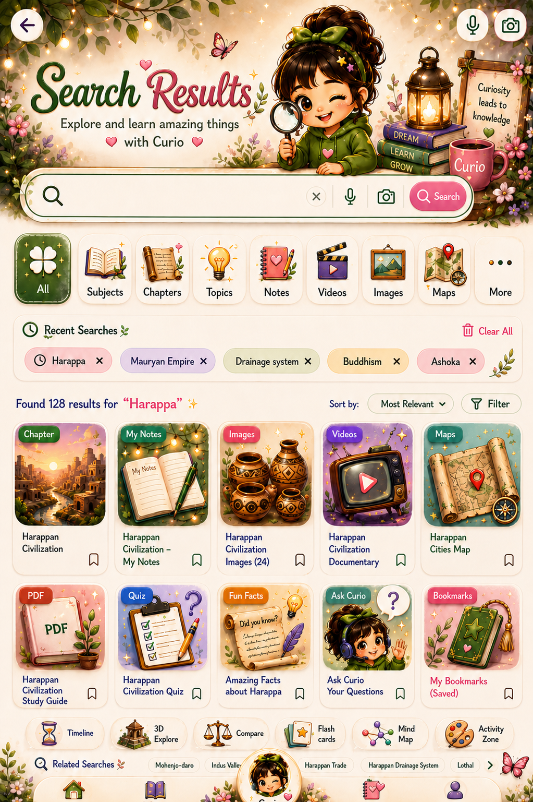

🌿 Search Results 🌿
Explore and learn amazing things
♥ with Curio ♥

Curiosity
leads to
knowledge ♥
leads to
knowledge ♥
◷ Recent Searches

No magical result found
Try another word, Mumma, or ask Curio directly.

Explore and learn amazing things
♥ with Curio ♥
Try another word, Mumma, or ask Curio directly.